Pooka at the kennels Amanda working with Pooka at the kennels.
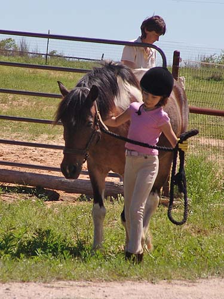
Getting Pooka from the pasture.
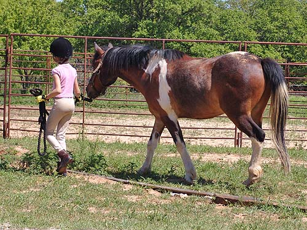
Leading him over for some much needed
grooming.
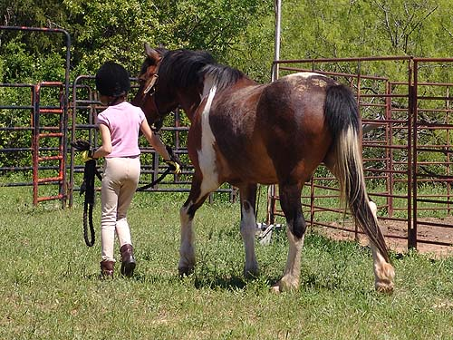
Hopefully they'll be a good match.
With the weather warming up, there will be more time for them to become
friends.
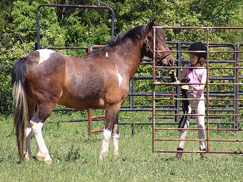
Maneuvering through the gate.
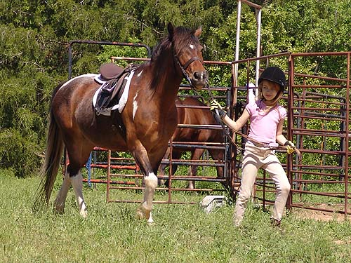
Tacked up and heading to the mounting
block.
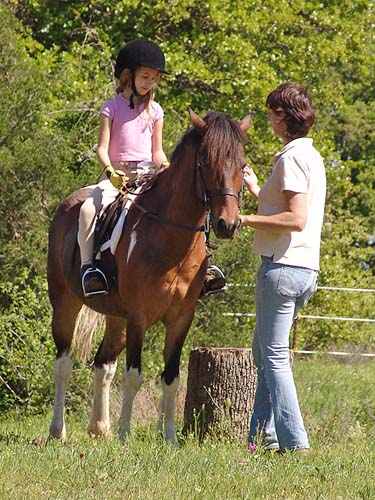
It's been a while since Amanda's ridden.
Chrissie was talking her through a basic check.
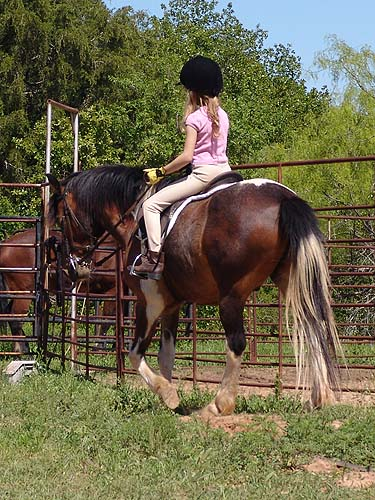
Heading back to the round pen.
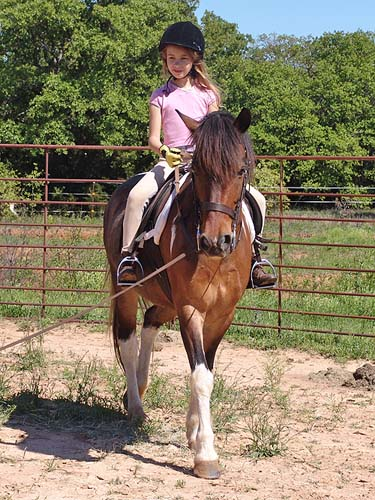
Pooka wasn't very forward. He'd been
running around in the cold the day before.
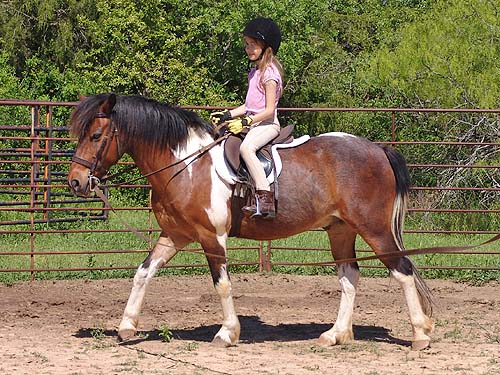
Chrissie is a stickler for position.
It shows in Amanda's riding.
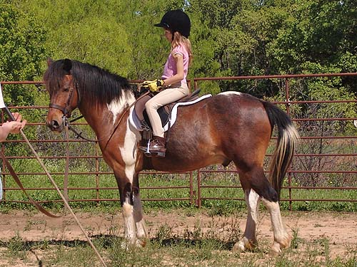
Practicing whoa.
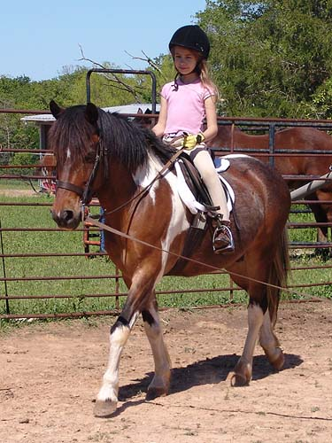
I think Pooka is going to have to
get used to a rider with shorter legs. His last owner was an adult and
her legs went below his belly.
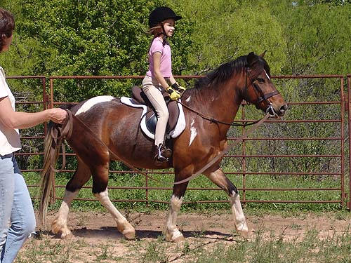
Amanda needs some time on the lunge
to get used to trotting without also guiding the pony. Lunge lessons aren't
that much fun, but they make a much more secure rider.